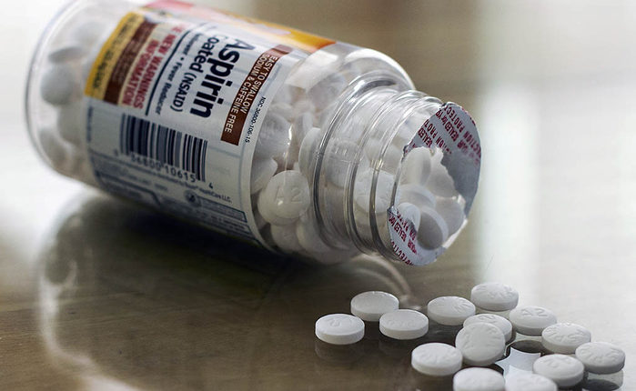

Аспирин
Лекарства, изготовленные из ивы и других богатых салицилатом растений, появляются в древнешумерских глиняных табличках, а также в древнеегипетском папирусе Эберса.[128][129] Гиппократ ссылался на использование салицилового чая для снижения лихорадок около 400 г. до н.э. и был частью фармакопеи западной медицины в классической древности и средневековье.[129] Экстракт коры ивы был признан за его специфическое воздействие на лихорадку, боль и воспаление в середине восемнадцатого века.[130] К девятнадцатому столетию фармацевты экспериментировали и предписывали различные химические вещества, связанные с салициловой кислотой, активным компонентом экстракта ивы.[128] Кора молодых ветвей белой ивы давно использовалась как жаропонижающее средство, например, в виде отвара. Получила кора признание у медиков под названием Salicis cortex. Однако все существовавшие терапевтические средства из коры ивы обладали очень серьезным побочным эффектом — они вызывали сильную боль в животе и тошноту. В стабильной форме, пригодной для очистки, салициловая кислота была впервые выделена из ивовой коры итальянским химиком Рафаэлем Пириа в 1838 году. Впервые была синтезирована Шарлем Фредериком Жераром в 1853 году. В 1859 году профессор химии Герман Кольбе из Марбургского университета раскрыл химическую структуру салициловой кислоты, что позволило в 1874 году открыть в Дрездене первую фабрику по её производству. В 1875 году для лечения ревматизма и в качестве жаропонижающего средства был применён салицилат натрия. Вскоре было установлено его глюкозурическое действие, и салицин начали назначать при подагре. 10 августа 1897 года Феликс Хоффман, работавший в лабораториях фирмы Bayer AG, впервые получил образцы ацетилсалициловой кислоты в форме, возможной для медицинского применения; используя метод ацетилирования, он стал первым в истории химиком, кому удалось получить салициловую кислоту химически чистой и в стабильной форме. Наряду с Хоффманом изобретателем аспирина также называют Артура Айхенгрюна (нем. Arthur Eichengrün)[131][132]. Сырьём для получения ацетилсалициловой кислоты служила кора дерева ивы. Bayer зарегистрировала новое лекарство под торговой маркой аспирин. Хоффман открыл лечебные свойства ацетилсалициловой кислоты, пытаясь найти лекарство для своего отца, страдавшего ревматизмом. В 1971 году фармаколог Джон Вейн продемонстрировал, что ацетилсалициловая кислота подавляет синтез простагландинов и тромбоксанов[133][134]. За это открытие в 1982 году ему, а также Суне Бергстрёму и Бенгту Самуэльсону была присуждена Нобелевская премия по медицине;[135] в 1984 году ему был присвоен титул рыцаря-бакалавра.